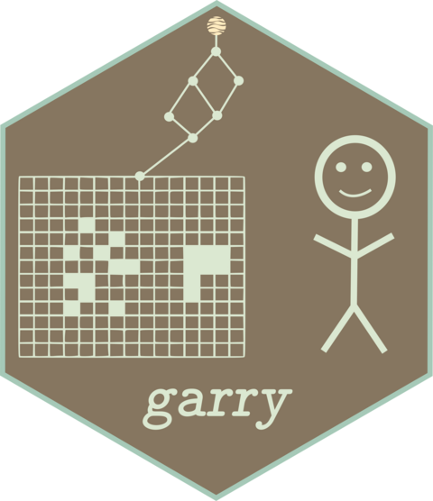

Changelog
garry (development version)
New features
-
coarsen(x, factor)maps a read onto the gridfactortimes coarser by block means of its valid values. Its read assembles each window’s finer cells from the sources as their nearest-neighbour read does (direct window reads of the sources on those cells’ pixels, a warp of each other source alone, later sources winning where they hold data), decodes them if the dataset decodes, and averages each block in one pass.stack_bands(coarsen(lazy_dataset(tiles, grid10, resampling = "near", decode = dequantize_aef), 3L))builds a 30 m embedding cube straight from the tiles, identical to writing the 10 m codes and then averaging their decoded values: an AEF box-year (four south-up tiles, 64 bands, 4488 x 5727 codes) in 8.5 s instead of 14 s through the codes (about 36 s before this release), an OlmoEarth window (128 bands, through a false-origin shift) in 6.8 s instead of 9.7 s. Cells warped from a reprojected source match the 10 m read’s undergarry.warp_exact = TRUE. -
lazy_dataset(decode = )takes several sources and Zarr arrays, one lookup-table VRT each. -
lazy_dataset(decode = )decodes a file’s 8-bit codes before any resampling: each code goes through a table made by evaluating the decode (for exampledequantize_aef()) on every code, the nodata code becoming NaN, andresampling = "average"then takes the mean of the valid decoded values. This replaces the lookup-table VRT a caller built to average decoded embeddings. Every read takes the codes at full resolution, never an overview’s resampled codes. Aligned reads, south-up files included, decode the codes themselves: a 30 m cube of a 64-band AEF box-year (codes 4488 x 5727 px) wrote in 4.0 s instead of 19 s through the lookup-table VRT, and a 128-band OlmoEarth one in 2.4 s instead of 12.6 s. The two agree to f32 rounding: 0.6% of OlmoEarth cells differ, by at most 6e-8 (GDAL averages in an order garry does not reproduce). Amask_assetband is read as stored, and bands must share one nodata code. -
lazy_dataset()reads N-D arrays such as a(time, band, y, x)Zarr array (ZARR:"<store>":/<array>) as dataset bands by time slice, using the dimension tags GDAL puts on each band;bandsindexes the band dimension. A bareZARR:"https://..."store is read over/vsicurl/. -
lazy_dataset()over several Zarr arrays (one per UTM zone, as OlmoEarth stores them) mosaics them onto the target grid: each window warps every zone and every band of a slice in one pass, the later source winning where zones overlap. The arrays must agree on their bands and dimension coordinates. -
band_sel(),time_sel()and per-slice operations work on a stack after it has been collected (the planner rewrites collected stacks in place). -
time_sel()takes a dataset and keeps the matching slices of every band. -
lazy_dataset(time = )builds only the selected time slices of an N-D source, selected astime_sel()selects them. A 9-year, 128-band OlmoEarth store built 1152 band reads (about 2 s) beforetime_sel()kept 128; withtime = "2024"it builds those 128 (0.25 s). -
dequantize_signed_power()decodes signed-power Int8 embeddings, anddequantize_olmoearth()decodes the OlmoEarth v1.3 embeddings (the same scheme asdequantize_aef()). -
extract_points()reads a materialised(band, y, x)cube, one column per band. - New vignette: OlmoEarth embeddings from Zarr.
Performance
A nearest-neighbour read of several sources no mosaic VRT can hold (south-up tiles, tiles in a neighbouring projection, one Zarr array per UTM zone) goes source by source: a direct window read of each source that lies on the target grid’s pixels, and a warp of each other source alone, laid over the window in order with later sources winning where they hold data, the cells the warper gives them all together. Only the sources off the target’s pixels pay for warping. Masked sources, and float sources whose nodata is not NaN where they overlap, keep the warper. A single south-up file read onto a subset of its own pixels is a direct read too, and south-up rows flip in C. One box-year of four south-up 64-band tiles (4488 x 5727 px) fetched to Int8 in 10 s instead of 17 s with 8 readers, identical to gdalwarp’s result; two 4-band tiles in neighbouring UTM zones, one on the target’s pixels, in 1.05 s instead of 1.13 s.
-
Scan stages run faster. On hutan’s SI tail at 5.76 M cells, with the daemon changes below, the robust Kalman smoother stage went from 0.66 s to 0.41 s a chunk and the drain from 44 s to 38 s with two compute daemons (34 s to 30 s with six); the products are identical. Three changes:
-
g_median()takes a median over one short axis (up to 32 values) with a sorting network, a fixed sequence of elementwise minima and maxima, instead of anvl’s transpose and per-pixel sort: 6x faster for 13 values, with identical results.kalman_llt()’s robust passes,hampel_smooth()andreduce_over(x, "median")use it. - A compute stage holding a scan runs its kernel over row strips of about 4,000 cells (
garry.scan_strip_px) inside one XLA program. XLA runs each scan step as passes over whole f64 planes, so on a full chunk the kernel was bound by memory bandwidth (six cores ran it 2.1x faster than one); a strip’s planes stay in cache. The smoother stage took 0.28 s a 480 x 480 chunk in strips on one core, against 0.71 s whole on one core and 0.34 s on six. -
kalman_llt()’s backward pass recomputes the predicted state from the filtered one rather than storing five more f64 cubes.
-
Edge chunks run their stage’s modal kernel. A grid that is not a multiple of the chunk size has right, bottom and corner chunks of three more shapes, and XLA compiles a kernel for each: every compute daemon compiled each stage for each edge shape it met, about 2.5 s a shape for the robust Kalman smoother and half the compute time of hutan’s SI tail at 5.76 M cells. An edge chunk’s inputs now grow to the modal shape with nodata, as beyond the raster’s edge, run the kernel compiled for that shape and have the padding cropped from the outputs (
garry.pad_edge_chunks). This holds for compute stages on daemons, in a single process, and fused onto reads; spatial reductions and model (patch) stages keep their own shapes. The tail’s drain went from 40 s to 30 s with two compute daemons and from 31 s to 23 s with six, with identical products; a single-process robust smoother over four chunk shapes went from 3.7 s to 2.6 s.Reads with a fused kernel no longer run a full garbage collection after every window; the daemon’s deferred pass collects them.
Compute daemons clean up after a task with a minor garbage collection, and a full one once four
garry.daemon_gc_mbbudgets of task data (512 MB) have passed since the last. A full collection walks every kernel the daemon has compiled and took a fifth of the SI tail’s compute time.Write quantization on a daemon runs as one jitted kernel rather than seven passes over the output.
A full read store no longer serialises the compute pool. When the resident read regions exceeded their budget, only one compute task could run at a time, and compute tasks are what free those regions, so the store stayed full. Now one compute task per compute daemon may run. On hutan’s SI tail at 5.76 M cells with two compute daemons, the second daemon went from 36 of 650 compute tasks to 335, and the drain from 56.9 s to 43.5 s, for about 0.3 GB more shared memory at peak.
The bands of one file collapse into a single read per window when the file’s bands share storage (a Zarr array, a pixel-interleaved file), also through a warp onto a target grid and through
lazy_map()applied per band. A pooled read of a 128-band OlmoEarth window fetched 11 times its bytes before (102 s for 1024 x 1024 pixels) and fetches them once now (14 s). Band-interleaved files keep their per-band reads.A Zarr dataset handle is closed once it has read
garry.zarr_handle_mb(256 MB), and daemons close their Zarr handles between runs, since GDAL keeps every chunk it decodes for the life of the handle.A Zarr store on a reprojected grid warps window by window from its cached handle rather than through a warped VRT, which reopened the store inside GDAL for every read.
Bug fixes
A multi-band warp of several sources or a Zarr array masks each band’s nodata alone. GDAL’s default (
UNIFIED_SRC_NODATA=PARTIAL) masked a pixel only when every band held nodata, so one band’s sentinel came through as a value and, from a later source of a mosaic, overwrote an earlier source’s data.garry.warp_exact = TRUEwarps windows with GDAL’s exact transformer, as the warped VRT of a single source already is, so which source pixel a cell takes never depends on where windows fall. GDAL’s default interpolates the transform along each row of a window to within 0.125 px. It is off by default: a one-band warp across projections costs 3-15x more with it.A direct (unwarped) read declines a source whose band has a mask or alpha band, which the warper honours and a plain read did not.
Read daemons can open Zarr stores: the vsicurl allowlist admits Zarr v3 and v2 metadata and chunk keys.
Reads that touch a Zarr store no longer turn on GDAL’s worker threads. GDAL reports from those threads, and gdalraster’s message handler then calls into R off the main thread, which aborted the R session.
garry_gdal_config()no longer setsGDAL_HTTP_RETRY_CODES. GDAL matches that list by substring, so"500"made every curl failure (DNS included) retry with backoff for minutes; GDAL’s default set is the same codes plus timeouts and resets.g_mean()averages integer input at f32, in custom reducers andlazy_map()functions alike. anvl 0.5.1 summed an integer input in its own dtype, so a mean of Int8 or Int16 values wrapped (100 and 120 gave -4.5).Memory budgets respect a container’s limit. Inside a container with its own cgroup namespace (Docker’s default on cgroup v2) and on cgroup v1, garry found no limit and budgeted against the host’s RAM.
garry_daemons()caps the GDAL block cache of every daemon atgarry_opt("gdal_cachemax_mb"), not only the read daemons’. The compute daemons and the writer were on GDAL’s default of 5% of RAM each, about 12 GB apiece on a 240 GB machine.
Observability
- The task log (
garry.task_log) tags each daemon’s memory sample with its role (read, comp or write), and samples the calling process’s memory, the container (cgroup) usage against its limit,/dev/shmuse and the compute and read admission budgets.garry_task_report()summarises them. Sampling and the memory guard now run every 5 s during a drain, including while every daemon is busy with a long task. - The task log records when a daemon starts each task (
startrows), andgarry_task_report()splits the time a task queued behind its daemon’s previous task from its run time. Launch-to-done alone held both, so a busy daemon’s tasks read about twice as slow as they ran. - The task log also records when a daemon finishes each task (
endrows), andgarry_task_report()splits the harvest lag (the result’s return and the host noticing it) from the run time. - A plan that only reads now logs its tasks too, written (
write_tif()of a dataset, say) or collected with daemons: each read on the read pool and each write on the writer daemon, with start and end times, and memory samples every 5 s. Before, such runs left no rows in the log. Every run also logs its pool widths, andgarry_task_report()adds each pool’s busy seconds and the last run’s share of each pool’s time busy, which shows whether the readers or the writer set the pace.
garry 0.1.0
The first stable-track release. The API below is the one garry intends to keep; it remains marked experimental while it settles.
Installation
- garry’s XLA stack (anvl >= 0.5.1, pjrt, stablehlo, xlamisc) is installed from the r-xla r-universe, and gdalraster from CRAN (>= 2.7.0). Point pak at the universe first:
options(repos = c(rxla = "https://r-xla.r-universe.dev", getOption("repos"))). - R >= 4.4 is required, as anvl and pjrt require it.
Breaking changes
- Verbs that shared names with terra and raster generics are renamed:
align()isalign_to(),mask()isapply_mask(),focal()isfocal_map()anddraw()isplan_draw(). The grid accessorsxmin(),ymin(),xmax(),ymax()andres()are replaced bygrid_bbox()andgrid_res(), joined bygrid_crs(). -
align_to()defaults toresampling = "near"(was"bilinear"), as the readers do, so categorical and QA rasters keep their values. Pass"bilinear"or"average"for continuous data. -
kalman_llt()takesdtype(wasout_dtype), likekalman_smooth();extract_points()takesx(wasraster) as its first argument. -
reduce_over()accepts only the reducers that execute:"sum","mean","min","max","median"and"count"."prod","quantile","sd","var","any"and"all"were documented but failed atcollect(); they now fail when the node is built (tracked in #32). -
lazy_stac_stack()is removed;lazy_dataset()builds the same stacks. - Engine internals are no longer exported: the daemon task bodies, the low-level GDAL adapter (
gdal_read_window(),gdal_write_window(),gdal_create_output(),gdal_warp_vrt()), bridge plumbing (g_jit(),g_quantize(), raw transport),as_vaster_extent(), and the unusedfusable(),is_barrier(),FusedNodeandcross_grid_window(). - Declared dtypes follow what the kernels compute. A double scalar makes an integer raster f32 (
x * 0.5,x - 100); an integer scalar (2L) keeps it. Sums of 8- and 16-bit integers accumulate in i32 (u32 in i64), where they previously wrapped. - Comparisons return
NaNwhere an operand is nodata, not a valid 0, so anan_rmreduction of a mask skips nodata. -
focal_map(),focal_kernel()andlazy_patch()read integer input as f32, so cells beyond the raster edge areNaN; their output is f32. - A band reduction (
reduce_over(ds, op, "band")) and a dataset scan default to the value bands, leaving the QA band out. - With regime boundaries, the Kalman smoother returns
NaNfor a regime with no observation instead of the previous regime’s extrapolation.
New features
- Base accessors for lazy objects:
dim(),names(),length(),$and$<-, andtime_labels(). - Unary
-and+,!,&and|(on 0/1 masks), logical scalars, andround(x, digits)on lazy rasters.sum(x)and other summaries point atreduce_over(). -
g_round()andg_clamp()join the documentedg_*vocabulary. -
kalman_smooth()gainsbandsfor datasets. - Collected results record their band names, which
as_terra()uses. - A small example raster ships in
inst/extdata; the core verbs have runnable examples.
Performance
Small local jobs no longer pay for the engine built for large remote ones. On the kadyb/raster-benchmark Landsat scene (10 bands of 7771 x 7871 UInt16), single-threaded:
- Plans that only read (sources, warps of them, and band or time stacks) take a new
"read_only"route: each chunk is copied from GDAL straight into the result, or into the output file. In-process, local files decode on every core. With pools running, the read pool reads the chunks in parallel; collected chunks are copied into place as they land, and written ones pass through shared memory to the writer daemon, so compression overlaps the reads. Loading the scene drops from 30.5 s to 5.1 s, a crop from 5.6 s to 1.3 s, a 3x downsample from 6.7 s to 1.9 s and a write from 40.1 s to 6.4 s (3.8 s with pools). Values and files are identical to the compute path;options(garry.read_only = FALSE)turns the route off. - User
creation_optionskeep multi-threaded compression unless they setNUM_THREADS. - Window reads finish in C (nodata, scale and offset, and the transpose to R’s column order), with the same double values: an NDVI drops from 3.8 s to 1.9 s.
Bug fixes
Wrong results:
- Two reads of one file that differed in scale, offset or resampling were merged into one.
-
materialise()kept only band 1 of a band or time stack, and refused integer plans. - South-up rasters (AEF embeddings) were read upside down on unwarped paths.
- A nodata value declared by the user, not the file, leaked into warps.
- Re-reading a rewritten file returned the old pixels from a cached handle.
- The composite fast path computed every band with band 1’s function and mask chain.
-
extract_points()ignored band selection, nodata and scale/offset. -
ds[[name]] <-with band math broke multi-slice datasets. -
align_to()onto a stacked target declared a grid it did not produce. -
stac_query()excluded the last day of the search range. -
stac_sign_mpc()signed every item with the first collection’s token. -
preview()swapped explicitly chosen bands and dropped scale/offset. -
qa_bits()let a repeated bit carry into the next one. -
time_sel()ignored prefix selectors when any selector matched exactly. - Integer focal edges were computed from zeros instead of nodata.
- Gradients skipped NaN only at stage inputs and read sources nearest-neighbour regardless of their resampling.
- Quantized writes to unsigned dtypes failed, and saturated values could collide with nodata.
- Building the OmniCloudMask EdgeNeXt weights from scratch failed.
Failures and hangs:
- A dead compute daemon made every later
collect()hang; runs now fail fast with agarry_pool_error. - A failed writer close (a full disk at the final flush) reported success.
- A failed write left a half-written file at the destination.
-
write_tif(cog = TRUE)on grouped datasets overwrote files and leaked temporaries;{group}in a directory component failed. - Integer overflows in the composite route and the chunk-snapping LCM aborted large plans.
-
plan_draw()was exponential in shared subgraphs. - Distributed runs drew their run id from the user’s RNG stream.
- The cgroup memory probe ignored ancestor limits and counted page cache as used, throttling confined runs to one task at a time.